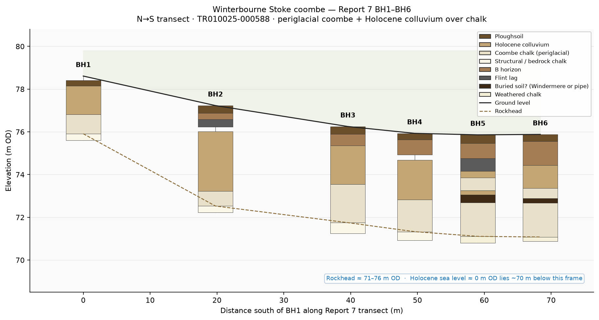
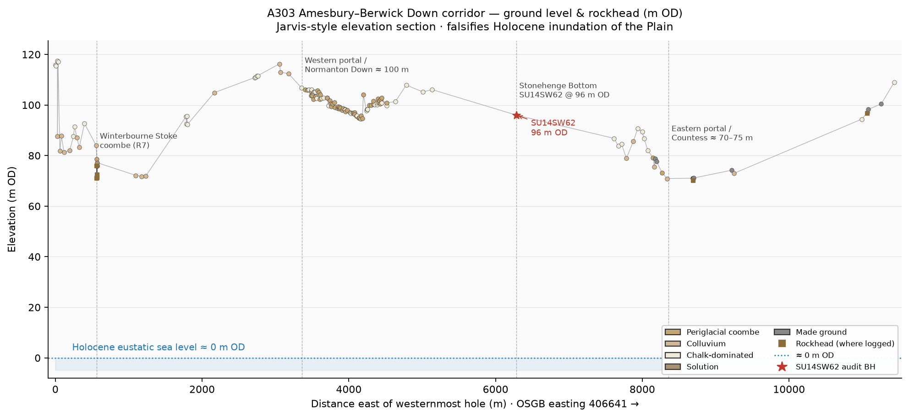
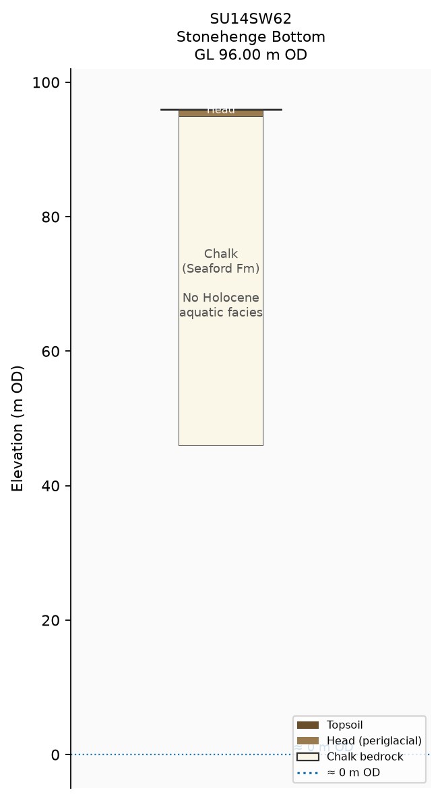

Tim Daw / working 2026. CC BY-SA.
Geolocated boreholes, trial pits and evaluation trenches along the A303 Amesbury–Berwick Down scheme — chalk rockhead, periglacial coombe/head, Holocene colluvium. Field “glacial” wording is flagged separately and reclassified where the reports themselves describe peri-glacial processes.
Coloured by sediment classification. Open rings mark holes whose own log uses “glacial” / till / glaciation field wording — almost always peri-glacial coombe, solifluction or solution in the same report’s interpretive text. Elevations are metres OD (Ordnance Datum), not depth below ground.
Periglacial coombe / head — solifluction and gelifluction of frost-shattered chalk and flint under cold-stage climates (BGS Coombe deposits / Head). Colluvium — Holocene downslope wash over coombe or chalk. Solution — dissolution pipes / hollows, sometimes with thickened colluvium. Chalk — thin ploughsoil over chalk-dominated logs. Made ground — anthropogenic fill (often eastern portal / Countess). Ambiguous — reserved where the printed sheet still does not pin a clear stack.
Across Reports 4, 5 and 7 the dominant scientific language is periglacial / solifluction / cryoturbation / coombe / colluvium. True ice-contact till wording is rare, informal, and usually contradicted by the next sentence. BGS Salisbury Sheet 298 maps Head / Coombe on the Plain — not till. Clarke & Kirkland (2026) conclude Salisbury Plain remained unglaciated in the Pleistocene. BuyStonehenge’s desk search is how this public NSIP corpus was noticed; this gazetteer is not a rebuttal essay, only a geolocated reading of the printed elevations and deposit labels.
Five evaluation trenches in this gazetteer carry a glacial_wording=y flag. Four of them sit together on the western approach interfluve in Report 4 (TR010025-000582); one is a separate eastern-portal phrase in Report 5 (TR010025-000584). Reading the printed sheets against the same reports’ geoarchaeology shows cold-climate Head / coombe, not ice-sheet till.
Report 4 is titled Archaeological Evaluation Report: Western Portal and Approach — Part 1: Text (April 2019; HE551506-AMW-HER-Z2_ML_M00_Z-RP-LH-0001). Corporate authorship is Wessex Archaeology Ltd for AECOM–Mace–WSP (AmW) on behalf of Highways England. Reports 4 and 5 share the same document author in the PDF metadata; no individual trench-sheet logger initials are printed in the Part 1 context tables. Report 4 §5.2 explicitly groups Trenches 241, 247, 248 and 263 (with others) as the central dry-valley / coombe crossing where “the natural geology comprised soliflucted or heavily cryoturbated Chalk” with “frequent periglacial stripes.” Those four flagged trenches span only ~300 m east–west at ~97–99.5 m OD on Normanton Down high ground near the proposed western portal (~100 m aOD) — one evaluation area, one report, one coombe-crossing cluster (glacial_wording_cluster=western_r4), not four independent ice claims. Winterbourne Stoke Crossroads barrow cemetery lies to the north-west at Longbarrow; the Report 7 Winterbourne Stoke coombe floor is a different, lower landform.
Report 5 is the matching Eastern Portal evaluation (Countess West; HE551506-AMW-HER-Z4-GN_000_Z-RP-LH-0001; same corporate line and PDF author). T511 sits alone in that eastern package, ~4.4 km east of the western cluster, on the lower approach falling toward the Avon (~70 m aOD at the far east of that site).
Report 5’s geoarchaeology chapter defines coombe deposits as “material soliflucted downslope under periglacial conditions (alternate freeze-thawing), likely during the last glacial period.” Report 4’s results section uses the same process language: soliflucted / cryoturbated chalk, periglacial stripes and striations (e.g. T214, T215, T246). Report 7 likewise places Pleistocene periglacial coombe over chalk rockhead. BGS Coombe deposits (COD) are solifluction/gelifluction Head in chalk valleys — parent unit Head, not till. On Sheet 298 the Quaternary inventory is clay-with-flints, head variants, terrace deposits and alluvium; no ice-sheet till is mapped on the chalk plain around Stonehenge.
Ice-contact till (lodgement or melt-out diamicton) is normally argued from a combination of: a poorly sorted diamict fabric with a measurable clast orientation (fabric analysis); a significant exotic far-travelled clast assemblage; glacitectonic structures or bullet-shaped / striated clasts with consistent orientations; and a stratigraphic context compatible with ice-marginal deposition. None of these five trench sheets supplies that package. They record chalky coombe / soliflucted chalk, local flint, solution hollows, or — in T511 — an informal “till” sentence that the same register immediately equates to soliflucted chalk natural. Sample 51138 is a 40 L bulk of context 51135 (light green sand and degraded chalk), later assessed for charred plant remains — it is not a till micromorphology or clast-provenance assay.
Ground levels at T241–T263 (~96.8–99.5 m OD) sit on the western approach interfluve / shallow coombe head near the western portal, tens of metres above Report 7’s Winterbourne Stoke coombe-floor rockhead (~71–76 m OD) and far above Holocene sea level (~0 m OD). Coombe and Head routinely mantle chalk slopes and interfluves under periglacial freeze–thaw; the adjective “glacial” on a coombe-chalk sheet is cold-stage climate shorthand, not evidence that an ice sheet overrode Normanton Down. Neighbouring blanks and naturals in the same appendix use the explicit labels “Soliflucted chalk”, “periglacial stripes”, and “Cryoturbated chalk.”
The eastern “glacial till… glacial activity” phrase is the only till wording among the five, but it is field slang inside a machine-trench natural that the register itself identifies as soliflucted chalk (51131 = 51103). Report 5’s interpretive geoarchaeology never elevates T511 to ice-laid diamicton; coombe remains peri-glacial solifluction. Treat 51132 as a flagged wording outlier on the lower eastern portal (~73 m OD), not as a mapped till sheet.
Elevation sections modelled on Mortimore et al. (2017) Fig. 16 (Proc. Geol. Assoc. 128) — the chalk corridor plotted in metres OD, the same visual language as the January 2026 Stonehenge Bottom flooding audit. Stacks are from printed Report 7 sheets; corridor points are this gazetteer.
Click a figure to enlarge · Esc or click outside to close

That dark band in BH5 and BH6 is not glacial till. Report 7 (TR010025-000588) logs a thin dark brown flinty silty clay within the periglacial coombe chalk in those two holes only. The report’s own alternatives are (1) a possible Windermere Interstadial buried soil, later overridden by renewed solifluction, or (2) a clay-with-flint lined dissolution pipe — the lower contacts are sharp, which is a poor fit for a normal in-situ soil profile. Either way it is a local coombe-hosted feature a few tens of centimetres thick, sandwiched in structureless chalk Head, not an ice-laid diamicton and not a sheet across the Plain. The corridor long-section’s brown veneer is the same family of deposits (ploughsoil, colluvium, coombe/head), drawn schematically between ground level and rockhead — again Head/coombe, not till.


Holocene eustatic sea level sits near ~0 m OD. Ground levels in this gazetteer sit from 70.90 to 117.50 m OD. Winterbourne Stoke coombe rockhead (Report 7 BH1–BH6) is about 71–76 m OD. BGS SU14SW62 at Stonehenge Bottom is 96.00 m OD with no Holocene marine/aquatic facies. High Holocene water covering Stonehenge Bottom / the Plain is incompatible with these elevations — same argument as the January 2026 flooding audit.
Mortimore, R.N., Gelder, A., Moore, J., Brooks, S., Gallagher, L. & Farrant, A.R. (2017). Stonehenge — a unique Late Cretaceous phosphatic Chalk geology. Proceedings of the Geologists’ Association 128, 564–598. Fig. 16 is the style model for the elevation sections above.
Every gazetteer pin has a schematic OD stick in the separate sticks/ directory (also linked from the detail panel). Most are proportional stacks from the unit-label string between ground level and rockhead (measured where logged; otherwise a class-based cover estimate). Report 7 BH1–BH6 use the printed OD intervals; SU14SW62 is the flooding-audit stick. These are reading aids, not substitutes for the NSIP sheets.
Each record carries OSGB36 easting/northing as printed, ground level (m OD) where printed, rockhead (m OD) only where the log states it (never invented), a short unit stack, and a glacial_wording flag independent of classification. Source document IDs link to the Planning Inspectorate published PDF where known.
Ground-surface base is the Environment Agency LiDAR Composite DTM 2022 1 m hillshade (downsampled for the web map; not rockhead). Cover-thickness circles use the small bottom-left key (metres; bold ring = measured rockhead). Rockhead OD contours are a light RBF surface over measured rockhead where logged and class-estimated rockhead elsewhere — schematic, not a surveyed isopach. Toggle layers top-right. Optional BGS GeoIndex overlay (grey pins, default off) links to public scans; rockhead is not yet transcribed from AGS/scans.
{kind=link}